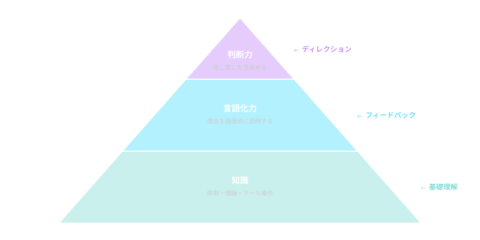
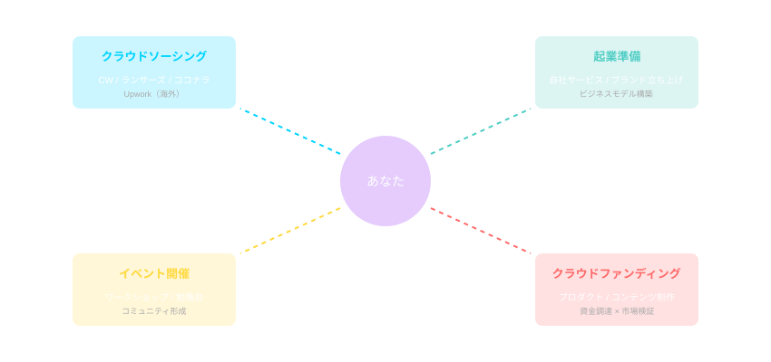

学びを「武器」に変える、戦略的転換点
19のテーマを学んだ今、あなたは何を「カタチ」にするのか？
19テーマで手に入れた「武器」の棚卸し


第1か月で「知識」と「言語化力」を構築。100日実践で「判断力」を鍛える。
デザインを「論理」で
説明できる
AIを「指示」して
成果物を生成できる
「なぜ良いか」を
言葉にできる
80点を30分で
出せる
19テーマの知識と言語化力を持つ「デザイン判断者」への道を歩んでいる
自分の「強み」と「伸びしろ」を可視化する
第1か月で苦手に感じた分野があっても、それは「まだ練習が足りない」だけ。100日実践は、その「伸びしろ」を実戦で埋める期間です。
強みを活かし、伸びしろを選択的に埋める。それが100日実践の設計図になる。
100日で何を「カタチ」にするか
第1か月で得た知識と言語化力を、実際のプロジェクトで使い、「判断力」を磨く期間です。

その決断は、今日この瞬間にある
第1か月の総括と100日実践への覚悟
19テーマで
「知識」と「言語化力」を
獲得した
自分の「強み」と
「伸びしろ」を
可視化した
100日で何を
「カタチ」にするか
設計した
実践編で
戦略を「具体化」
する
さあ、実践編で「設計図」を描こう
5問のクイズで今日の内容を確認しましょう